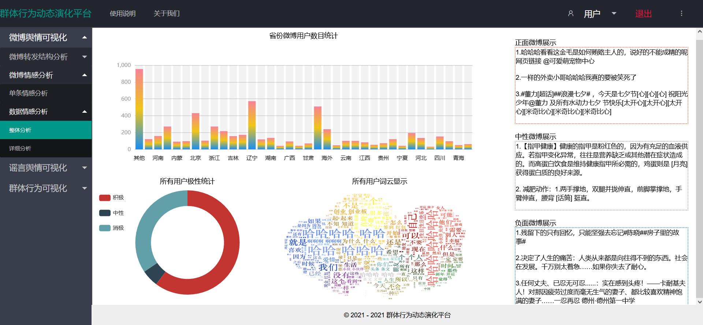
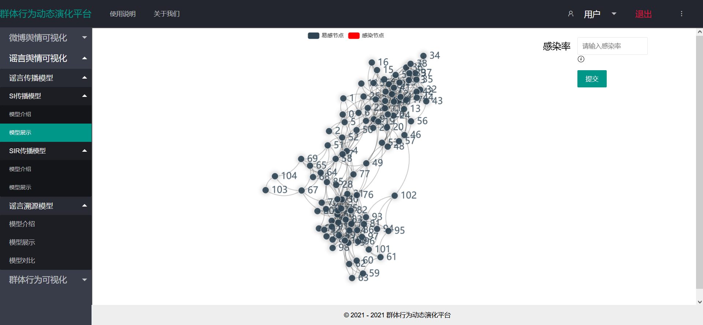
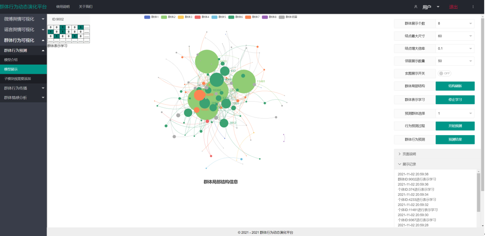

一、登录与注册
进入系统后首先进入的是登录界面，输入账号密码登录系统。
如果用户没有账号，可点击注册按钮进行注册，进入注册页面后，按照提示输入信息点击按钮即可注册。
如果用户忘记密码，可点击忘记密码按钮，输入账号和邮箱验证身份，点击下一步，进入修改密码界面。
进入修改密码界面后，输入新密码以及确认密码，点击完成按钮，即可进行密码修改，修改成功后会跳转至登录界面。
二、主界面
成功登陆后即可进入系统主界面，通过平台主界面左侧所列的功能模块导航按钮可进入各功能模块。
点击上面导航中的使用说明按钮，将进入使用说明界面，介绍了该平台各模块使用方法；
点击上面导航中的关于我们界面按钮，将进入到介绍我们团队成员工作等信息的界面；
点击右上侧的用户按钮，可以查看相关的用户信息；
点击注销账户按钮，用户可以进行账号注销，并跳转到登录页面；点击退出按钮可以退出并跳转到登录界面。
三、微博舆情可视化模块
点击左侧导航进入传播模型模块，该模块包括微博转发结构分析和微博情感分析两个子模块。
1.微博转发结构分析
点击左侧导航“微博转发结构分析”进入该界面后，该界面下有“转发结构分析”一个部分。
转发结构分析
转发结构分析模块主要分为四部分。如图所示，第一部分是左上方微博转发随时间变化的动态分布图，可展示某条具体微博的转发情况。
点击播放按钮开始展示每个时间点转发的微博以及累计转发量，移动至图标上可显示具体的转发内容。
点击情感按钮可展示出转发者转发该微博的情感导向。点击重置按钮可回到初始页面。
第二部分是右上方的柱状图，展示了转发用户的认证比例、转发层级分布以及性别比例。第三部分是左下方的折线图，展示了转发量随时间变化的分布情况。第四部分是右下方的地图模块，展示了转发用户的地区分布，移动至具体的省份可显示转发的人数。
2.微博情感分析
点击左侧导航“微博情感分析”进入该界面后，该界面下有“单条情感分析”与“数据情感分析”两个部分，其中“数据情感分析”包含“整体分析”和“详细分析”两个子模块。
单条情感分析
点击左侧导航中的单条情感分析栏，进入该模块后页面展示的是一个文本示例搜索栏，在搜索栏中输入任意文本，点击按钮，下方就会显示该文本情感极性分析分布图，包括积极情绪和消极情绪，将光标移动到该分布图的红色部分或黑色部分上就会显示该文本的积极情绪或消极情绪占比。以文本“仍未忘相约看漫天黄叶远飞”为例，在搜索栏中输入该文本，点击提交后显示的页面如上图所示。
数据情感分析-整体分析
子页面左侧上方是数据集中各省份用户的数目统计条形图，使用鼠标的滚轮可以对其进行放大或缩小，下图显示的是最小的缩略图。

可以对其放大从而清楚的看到每一个数据条的省份名字，将光标移到其中的一个数据条上，该彩色的数据条会变成红色，并且在光标旁出现该省份用户的准确数据。以辽宁省为例，可以看看到其具体数据如下图所示。
子页面左侧下方左边展示的是数据集中所有用户的情感极性分析环形图。将光标移动到三个颜色中的任意部分，环形图中间会显示该部分的极性是积极、消极或者中性，与此同时，光标旁边出现该极性用户数以及占比值。下图是以消极用户为例的结果展示图。
子页面左侧下方右边展示的所有用户的词云。子页面右侧展示的是从数据集中抽选的正面、中性和负面微博的示例文本。
数据情感分析-详细分析
初始页面如下图所示。子页面左侧展示的是不同年份的微博总数折线图，右侧是不同地域的微博总数分布图。
点击左侧折线图中的节点，该节点会放大，光标旁边会显示该年份节点的微博总数，下方左边会显示该年份的情感极性分布环形图，右边则显示的是该年份用户的词云图，以2018年的微博详细情感分析为例，点击折线图中2018年的节点，结果如下图所示。折线图下方左边显示的是2018年的微博用户情感极性分布，将光标移动到环形图上方的三个颜色中的任意部分，环形图中间会显示该部分的极性是积极、消极或者中性，同时光标旁边出现该极性用户数以及占比值。折线图下方右边显示的是2018年的微博用户词云图。
点击右侧地图中的任意区域，光标右侧将会显示该区域的微博总数，同时右侧高低条的值也会发生相应变化，地图下方左边会出现该区域的情感极性分布环形图，右边会显示该区域用户的词云图，以新疆地区为例，点击地图中的新疆地区，结果如下图所示。地图下方左边显示的是新疆地区的用户情感极性分布，将光标移动到环形图上方的三个颜色中的任意部分，环形图中间会显示该部分的极性是积极、消极或者中性，同时光标旁边出现该极性用户数以及占比值。地图下方右边显示的是新疆地区的用户词云图。
四、谣言舆情可视化模块
点击左侧导航进入传播模型模块，该模块包括谣言传播模型和谣言溯源模型两个子模块。
1.谣言传播模型
点击左侧导航“谣言传播模型”进入该界面后，该界面下有SI模型与SIR模型两个部分,两个部分下分别有模型介绍和模型展示两个部分。
(1)SI模型
(1-1)模型介绍
点击左侧导航进入SI模型介绍模块后，该页面展示了关于SI模型的理论介绍以及图片展示。页面上部分是关于SI模型的理论介绍，鼠标点击“SI模型介绍”标题栏可以收起模型介绍相关内容，用户可以自由阅读了解SI模型相关知识容。页面下半部分是关于SI模型的图片展示，两张图片为轮播播放，用户也可以点击右（左）侧按钮查看下（上）一张图片。
(1-2)模型展示
点击左侧导航栏进入该模块后，该模块为用户展示了当前社交网络图中SI模型下谣言扩散过程。进入初始界面显示了网络的初始结构。在右上角设有输入框和提交按钮，用户输入感染率，点击提交即可开始SI模型的模拟传播演示

网络默认为Wiki百科网络，共有104个节点，节点编号从0开始，图中灰色节点表示易感节点，红色节点表示感染节点。在初始时刻，网络随机产生一个感染节点，其余节点均为易感节点，根据用户配置的感染率参数，将谣言通过邻居节点传播下去。界面会动态显示当前节点感染其邻居的过程以及当前被感染的节点，在左上角会显示当前时间片网络中新增感染节点的个数以及被感染的节点等提示信息，以便用户更直观清晰的了解网络中节点的的感染过程。
当网络中所有节点均已被感染，传播过程结束，界面会自动生成传播结果折线图。该图分析了传播过程中每一时间片易感节点和感染节点数量的变化，灰色的曲线表示易感节点，红色的曲线表示感染节点。
(2)SIR模型
(2-1)模型介绍
点击左侧导航进入SIR模型介绍模块后，该页面展示了关于SIR模型的理论介绍以及图片展示。页面上部分是关于SIR模型的理论介绍，鼠标点击“SIR模型介绍”标题栏可以收起模型介绍相关内容，用户可以自由阅读了解SIR模型相关知识容。页面下半部分是关于SIR模型的图片展示，两张图片为轮播播放，用户也可以点击右（左）侧按钮查看下（上）一张图片。
(2-2)模型展示
点击左侧导航栏进入该模块后，该模块为用户展示了当前社交网络图中SIR模型下谣言扩散过程，初始页面显示了网络的初始结构。在右上角设有输入框和提交按钮，用户自定义输入感染率和恢复率，点击提交即可开始SIR模型的模拟传播演示。
网络默认为Wiki百科网络，共有104个节点，节点编号从0开始，图中灰色节点表示易感节点，红色节点表示感染节点，绿色节点为恢复节点。在初始时刻，网络随机产生一个感染节点，其余节点均为易感节点，根据用户输入的感染率，将谣言通过邻居节点传播下去。与此同时，被感染的节点以一定的概率自愈成为恢复节点，即恢复概率。界面会动态显示当前节点感染其邻居的过程，动态的显示当前被感染的节点以及通过自愈恢复的节点，在左上角会显示当前时间片网络中新增感染节点的个数，新增恢复节点个数以及被感染的节点和恢复节点等提示信息，以便用户更直观清晰的了解网络中节点的的感染和恢复的过程。
当网络中不存在感染节点，传播过程结束，界面会自动生成传播结果折线图。该图分析了传播过程中每一时间片易感节点，感染节点和恢复节点数量的变化，灰色的曲线表示易感节点，红色的曲线表示感染节点，绿色曲线为恢复节点。
2.谣言溯源模型
点击左侧导航中谣言溯源模块，该模块分为模型介绍、模型展示和模型对比三部分。
(1)模型介绍
点击左侧导航“模型介绍”按钮进入该界面后，该界面介绍了基于部署观测点的谣言溯源模型以及该模型的效果展示图。
(2)模型展示
点击左侧导航“模型展示”按钮将进入，进入该模块后自动展示当前社交网络图，其中不同颜色的节点表示
不同的社区，节点对应的社区名字在顶端展示。右侧是谣言溯源算法需要的输入参数，“观测比例”表示在网络中选择多少节点
记录他们的感染时间，输入值为浮点型，输入值的范围为0.05-0.9，鼠标放在输入框左下角的小图标可以看到输入要求提示；
第二个输入的是“迭代次数”，输入范围为大于1的整数；第三个是选择一种“观测方法”，点击下拉框可以进行选择，
选择观测方法表示以什么样的方式部署观测节点(比如最大度算法，部署观测点的方式是对网络中节点的度进行排序选择度数在大的前K个节点)。
当配置好这些参数之后，点击提交按钮，网络图中的各个节点在谣言溯源算法模型下进行扩散及溯源。
当所有的观测节点均被感染之后，将开始反向传播的过程，计算源节点到各观测的节点的最短路径距离，并在左侧展示。
当反向扩散寻找最短路径结束，整个源定位过程结束。
当所有的迭代次数执行完毕，会出现源定位的结果，迭代N次后的准确率以及平均误差距离，柱状图可视化了源定位的结果，其中横轴表示预测的源节点与真实的源节点的误差距离，纵轴表示占总迭代次数的比率。
(3)模型对比
点击左侧导航“模型对比”进入模型对比模块，可以进行模型的对比实验(左侧为改进后的溯源模型，右侧为对比溯源模型)。点击左侧导航“模型对比”进入模型对比模块，提供了模型对比试验的模块，可以通过输入相同的模型参数或不同的模型参数进行对比。
输入参数完成后，然后点击提交可以同时运行两个信息扩散溯源过程。
最后，将获得两个溯源传播模型的对比试验结果。
五、群体行为可视化模块
点击左侧导航中群体行为可视化模块，该模块分为群体行为预测、群体行为传播、群体情感分析三部分。
1.群体行为预测
点击左侧群体行为可视化模块里面的群体行为预测，进入该模块后可以查看DMGPL模型介绍以及模型展示。
(1)模型介绍
模型介绍页面描绘了模型的总体架构图，以及模型各阶段结构的划分以及思想描述。
(2)模型展示
进入模型展示页面，将自动随机挑选几个群体及其部分邻居节点组成的局部网络，并且展示构造出的该群体局部网络结构。群体局部网络结构中包含少数几个群体，不同颜色的节点归属不同的群体，最后一种颜色的节点为这些群体节点的部分邻居节点；网络结构中节点的大小代表该节点用户参与事件/行为的多少。群体局部结构展示如下：
群体局部结构玄图模式展示如下：
页面右侧罗列了一些下拉框与按钮，其中群体展示个数下拉框可以选择展示群体的数量，结点最大尺寸可以限制网络图中节点的大小上限，结点增大倍率下拉框可以限制用户每参加一次事件/活动，节点大小增大多少，邻居展示数量可以选择需要展示的群体部分邻居的数量，玄图展示开关可以控制网络图是否以玄图模式布局，群体局部结构刷新按钮可以根据以上下拉框的选择重新挑选群体进行渲染展示，群体表示学习按钮将展开DMGPL模型中的群体表示学习流程，预测群体选择下拉框表示需要展示哪个群体的行为预测过程，群体行为预测按钮可以开启选中群体的行为/事件预测过程，群体行为预测结果展示按钮点击后可以展示群体行为预测的结果，结果用表格形式罗列，页面说明面板为页面的一些介绍，展示记录面板为页面中DMGPL模型演示过程中的一些具体过程记录内容。群体表示学习过程展示如下：

群体行为预测过程展示如下：
群体行为预测结果表格中罗列群体预计参与某事件的概率，其中概率较高的前15行背景色较深，而排名非前15行背景色较浅，其中目标事件用红色字体标记，若目标事件预测排名在前15内，说明预测准确，该群体的确参加了该目标事件，否则预测错误。群体行为预测命中即表示该群体行为预测结果中，目标事件概率排在前15位以内。平均群体行为预测命中率即所展示的群体的群体行为预测命中率的平均值。群体行为预测结果展示如下：
操作流程，选择好群体展示个数、结点最大尺寸、结点增大倍率、邻居展示数量后，刷新群体局部结构，群体局部结构呈现以后，可以进行群体偏好表示学习，再选择相应的待预测群体，进行群体行为预测过程，最终展示群体行为事件预测结果。群体行为预测结果展示如下：
2.群体行为传播
点击左侧群体行为可视化模块里面的群体行为传播，进入该模块后可以查看UGT模型介绍以及模型展示。
(1)模型介绍
点击左侧导航“群体行为可视化”模块的“群体行为传播”模块中“模型介绍”按钮，即可查看用于群体行为传播演化的算法——UGT模型的介绍。该页面下方是模型展示模块的部分结果图，如下图所示。
(2)模型展示
点击左侧导航“群体行为可视化”模块的“群体行为传播”模块中“模型展示”按钮，即可展示群体的网络结构。本模块采用UGT算法模拟群体行为的传播过程，本模块的网络共由20个群体组成，每个群体由源节点和相应时间步的扩散节点构成，每个群体的最大时间步也不同。此外，网络每个节点有各自的id编号，网络中节点的初始状态皆为“未激活状态”，如下图所示。
页面右侧下拉框可用于用户选择需要展示的群体，本页面可展示全部群体的行为传播演化，也可展示单个群体的行为传播演化，上述行为传播演化皆可通过先在下拉框内进行选择需要演示的群体，再点击“提交”按钮实现。若用户选择展示单个群体，即“群体1”、“群体2”、“群体3”……，该页面则展示相应群体的行为传播过程。以群体1为例，页面在第一个时间点激活群体1的源节点，第二个时间点激活群体1中第一个时间步的扩散节点，第三个时间点激活群体1中第二个时间步的扩散节点，最终直到群体1中所有节点都被激活为止。结果如下图所示。
若用户选择展示“全部”群体的行为传播演化，该页面则从第一个时间点开始，在第一个时间点激活群体1的源节点；第二个时间点激活群体1中第一个时间步的扩散节点和群体2的源节点；第三个时间点激活群体1中第二个时间步的扩散节点、群体2中第一个时间步的扩散节点和群体3的源节点；同理，第三个时间点激活群体1中第三个时间步的扩散节点、群体2中第二个时间步的扩散节点、群体3中第一个时间步的扩散节点和群体4的源节点，最终直到所有节点都被激活。不同群体的节点在激活后显示不同的颜色。在如下图所示。
所有节点都被激活后，页面会显示不同时间点下网络中被激活节点的数量折线图，以此模拟群体的行为传播演化，如下图所示。
3.群体情感分析
该模块包含四个子模块：模型介绍、群体结构展示、群体情感计算、种子节点选取
(1)模型介绍
点击左侧导航中的群体行为可视化栏，再点击群体情感分析栏，进入该模块后，页面的上半部分展示的是基于群体情感的影响力最大化方法原理阐述，下半部分展示的是该模型各部分可视化模块的总览轮播图。
(2)群体结构展示
如下图所示，点击左侧导航群体结构展示栏，进入该模块后在子页面显示的是使用louvain算法对954个用户进行群体划分的可视化结果，图中节点表示用户，连边表示用户关系，不同用户群体的节点用不同的颜色表示，一共划分了8个群体，3798个关系。将光标移动到节点上可以显示节点id。
点击上方各个图例可以选择分别隐藏或展示某个群体。下图展示的是隐藏其他群体仅展示群体1的效果图,光标放在用户id为775的节点上。
(3)群体情感计算
点击左侧导航栏中的群体情感计算栏，展示的子页面如下图所示。子页面左上方饼图展示的是所有用户初始情感分布情况，将光标移动到红色区域或黑色区域上方可以分别显示初始阶段积极或消极情感的具体用户数。
点击右上方下拉框，可以选择展示某个群体的初始情感分布，下图展示的是群体3的初始情感分布。
子页面下方展示的是各用户群体在60天内不同时间片下的情感值计算结果,将光标移动到某一天时可展示该天各群体的具体情感值，如下图所示。
点击折线图上方各个图例可以选择分别隐藏或展示某个群体在不同时间片下的情感值变化情况。下图展示的是隐藏其他群体仅展示群体4的效果图。
(4)种子节点选取
点击左侧导航栏中的种子节点选取栏，子页面中将展示种子节点数为5的影响力最大化的节点选取过程。如图3-8所示，子页面右侧显示的是由954个用户构建的关系网络，在经过群体情感计算后我们可以得到候选种子节点集，根据该集合逐个计算候选节点各种可能组合的影响力最大值。我们将这一过程进行动态展示，设置种子节点数为5，将每一轮计算过程和结果输出在子页面左侧。如下图所示，当前计算的节点id为10和32，此时激活id为10和32的节点，即将该节点放大，颜色从蓝色变为红色，并输出影响力计算结果。
经过了多轮迭代之后，可以得到种子节点数为5的最终选取结果，如下图所示，将最终种子节点选取结果列在子页面左上方，在关系图中这几个节点处于激活状态，即放大标红。
经将光标放在激活节点上可以显示该节点的最近相连节点，如下图所示，展示的是id为2的种子节点的邻居关系情况。